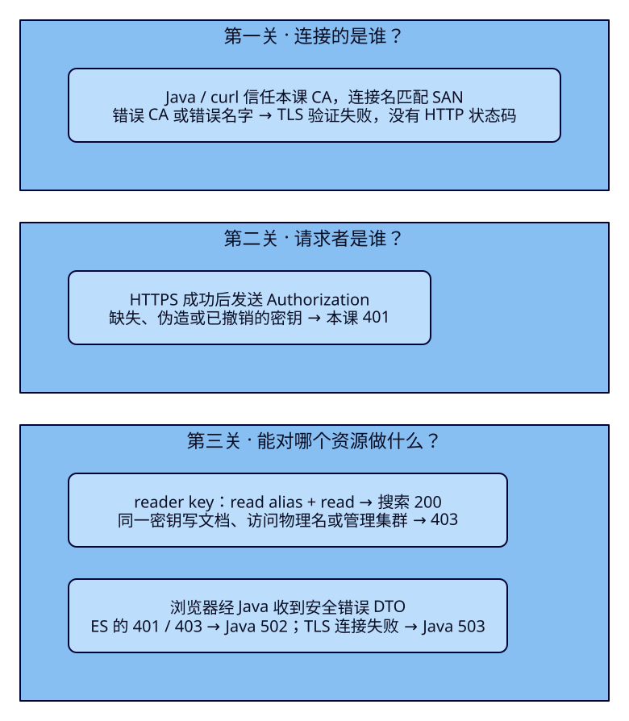
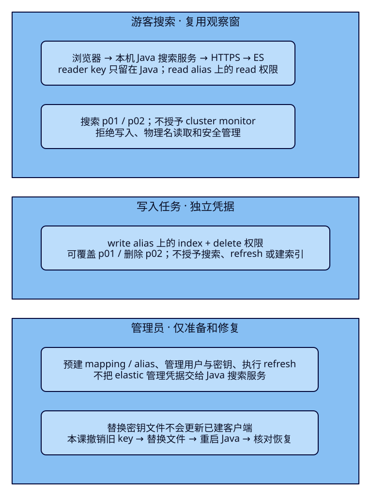

旅游搜索接口，
需要哪些ES权限？
旅游搜索已经能迁移索引、恢复备份。可是，如果游客搜索服务拿着elastic管理员口令，一处配置错误就可能删除索引；只给端口加口令，又不能保证它连到可信的ES。本课把同一个搜索入口换成HTTPS和只读API key，让写入任务使用另一把受限密钥，再亲手解释证书失败、401、403以及修复后的景点结果。
学完能用输出证明什么
- 区分CA信任、连接名校验、认证和授权；用错误CA、错误名字、缺失/错误密钥说明失败发生在哪一步。
- 把搜索读取、文档写入和索引/安全管理分开授权；证明相同凭据在允许资源上成功、越界时403。
- 用Boot4/JDK25与官方客户端安全实连，核对REST、Java和观察窗结果；完成撤销、换文件、重启和恢复，凭据只留在服务端受限文件。
本课目录
图解跳转：01 · 三道检查 · 02 · 职责与权限边界
1. 游客只搜索，为什么它能删掉整个索引？
F34为了演练恢复，管理员能创建仓库、删文档和移动alias。这些操作不属于游客搜索服务的职责。ES按请求携带的身份判断权限，不会根据“这个Java进程看起来像搜索程序”自动限制它；若程序使用elastic，程序里的每个ES请求就带着这个超级用户的能力。浏览器界面没有删除按钮，也不能证明服务端凭据没有删除权限。
本课继续把ES当搜索投影：搜索服务从read alias查景点，写入任务通过write alias更新投影，管理员准备mapping、管理凭据。权限描述的是谁能对哪个资源执行哪些动作。业务上的“只读搜索”要落成索引级read；“维护景点资料”要落成文档写入/删除；建索引、改设置、管理用户是另一组权限。既有搜索DSL不变，游客仍输入西湖、杭州、预算与距离，看到卡片或安全的错误提示。
2. 先确认连接的是谁，再确认请求者能做什么
Java连接https://127.0.0.1:19935时，ES先出示服务器证书。证书由本课CA签发；CA是签发证书的信任机构。Java加载CA的公开证书，验证证书链及有效期，客户端还会核对连接的IP或主机名是否列在SAN（证书允许的名字）里。CA证书可以分发给客户端；CA私钥负责签发，服务器私钥证明服务器持有证书，二者都不应交给浏览器。
HTTPS建立后，Authorization头才在加密连接里发送。本课使用Basic管理本机实验：用户名/口令的Base64只是编码，不能代替TLS。程序改用API key：它同样是拿到就能使用的秘密，便于分别限制范围、设有效期和撤销；它不是TLS证书。HTTP层本课不要求客户端证书，认证靠API key；节点间transport层则要求双向证书并启用full校验。
认证回答“这是谁”，授权回答“这次操作是否允许”。在本课关闭匿名访问、直连ES的条件下：没给或给错凭据返回401；有效只读密钥写文档返回403。错误CA或错误连接名会在TLS握手阶段失败，没有ES的HTTP状态码。代理、匿名访问或其他认证方式可能改变具体响应，不能凭某个数字推断所有部署。

3. 独立两节点，凭据不进入Git或Pages
独立集群es-framework-f35 / travel-f35-lab，ES9.4.0/Lucene10.4.0。n1为master/data/ingest，HTTPS回环19935；n2为data，回环19936。两节点各192MiB堆/640MiB限额，共用同一Docker VM，不代表跨机器容灾。Docker私有网段172.30.35.0/24，n1/n2固定为.11/.12，证书SAN分别含该IP、节点DNS、localhost和127.0.0.1。ES发布的transport地址是IP，full校验必须有对应SAN；只有DNS条目会导致节点互不信任。网段若与已有网络冲突，应同时调整Compose和生成证书所用IP。
本课显式关闭安全自动配置，自己配置HTTP和transport TLS；这不同于官方全新节点的自动安全初始化。首次启动才临时加入n1引导名单，成团后移除；原卷重启不重新引导。CA/私钥、随机管理员口令和密钥响应只在被Git忽略的infra/f35/.local，目录0700、主机秘密文件0600；容器证书卷只复制所需节点证书/私钥和公开CA，不含CA签发私钥。读者不要粘贴私钥或真实密钥到笔记、截图和URL。
cd projects/travel-search
python3 labs/f35/lab.py init --out /tmp/f35-reader-init
python3 labs/f35/lab.py start --out /tmp/f35-reader-setupinit仅用于全新F35资源，遇已有秘密或卷会拒绝覆盖。start核对两入口同UUID、节点角色和TLS；首次等待较久。完整配置见Compose与首启覆盖。证书30天有效，API key一小时有效，均为学习配置；过期要通过受控流程重新签发或重新发key，不通过关闭校验解决。
HTTP与transport TLS的完整共同配置
cluster.name: travel-f35-lab
network.host: 0.0.0.0
discovery.seed_hosts: n1:9300
xpack.security.enabled: "true"
xpack.security.autoconfiguration.enabled: "false"
xpack.security.http.ssl.enabled: "true"
xpack.security.http.ssl.certificate_authorities: certs/ca.crt
xpack.security.http.ssl.client_authentication: none
xpack.security.transport.ssl.enabled: "true"
xpack.security.transport.ssl.verification_mode: full
xpack.security.transport.ssl.client_authentication: required
xpack.security.transport.ssl.certificate_authorities: certs/ca.crt
xpack.ml.enabled: "false"
ELASTIC_PASSWORD_FILE: /run/secrets/admin_password
ES_JAVA_OPTS: -Xms192m -Xmx192m
ulimits:
nofile: {soft: 65535, hard: 65535}
services:
n1:
<<: *common
environment:
<<: *environment
node.name: travel-f35-n1每个节点另分别配置certs/n1或certs/n2下的server.key/server.crt；transport的client_authentication=required和verification_mode=full使节点同时验证对端。客户端仍需自己的信任配置，服务端“启用了TLS”不会自动把CA装进Java。
主索引tut-f35-attractions-v001，2主/每主1副、refresh=-1、dynamic=strict、name使用whitespace并带raw=keyword。沿用六份独立复制到本课的资料：p01为6000分，p02免费；两者满足西湖、HZ、CNY、在售、3km及20000分预算。p03超预算、p04城市不符、p05下架、p06名称不符；金额仍是CNY整数分。
完整mapping、固定六份资料与两个alias
{
"settings": {
"number_of_shards": 2,
"number_of_replicas": 1,
"refresh_interval": "-1"
},
"mappings": {
"dynamic": "strict",
"properties": {
"attraction_id": {
"type": "keyword"
},
"name": {
"type": "text",
"analyzer": "whitespace",
"fields": {
"raw": {
"type": "keyword"
}
}
},
"city_code": {
"type": "keyword"
},
"ticket_price_fen": {
"type": "integer",
"coerce": false
},
"currency": {
"type": "keyword"
},
"status": {
"type": "keyword"
},
"location": {
"type": "geo_point"
}
}
}
}{"create":{"_id":"p01"}}
{"attraction_id":"p01","name":"西湖 湖畔","city_code":"HZ","ticket_price_fen":6000,"currency":"CNY","status":"open","location":{"lat":30.25,"lon":120.15}}
{"create":{"_id":"p02"}}
{"attraction_id":"p02","name":"西湖 公园","city_code":"HZ","ticket_price_fen":0,"currency":"CNY","status":"open","location":{"lat":30.251,"lon":120.15}}
{"create":{"_id":"p03"}}
{"attraction_id":"p03","name":"西湖 山居","city_code":"HZ","ticket_price_fen":30000,"currency":"CNY","status":"open","location":{"lat":30.252,"lon":120.15}}
{"create":{"_id":"p04"}}
{"attraction_id":"p04","name":"西湖 古街","city_code":"FZ","ticket_price_fen":1000,"currency":"CNY","status":"open","location":{"lat":30.251,"lon":120.15}}
{"create":{"_id":"p05"}}
{"attraction_id":"p05","name":"西湖 故居","city_code":"HZ","ticket_price_fen":5000,"currency":"CNY","status":"closed","location":{"lat":30.253,"lon":120.15}}
{"create":{"_id":"p06"}}
{"attraction_id":"p06","name":"运河 西溪","city_code":"HZ","ticket_price_fen":1000,"currency":"CNY","status":"open","location":{"lat":30.25,"lon":120.15}}{
"actions": [
{
"add": {
"index": "tut-f35-attractions-v001",
"alias": "tut-f35-attractions-read"
}
},
{
"add": {
"index": "tut-f35-attractions-v001",
"alias": "tut-f35-attractions-write",
"is_write_index": true
}
}
]
}先将JAVA_HOME/PATH指向完整JDK25，构建既有Boot4.0.8/Java与Rest5 Client9.4.8工程。应用JDK与ES内置JVM分别记录；不新增Controller或前端：
cd projects/travel-search/backend
./mvnw -B -ntp clean package dependency:build-classpath -Dmdep.outputFile=target/f35-classpath.txtcd projects/travel-search
python3 labs/f35/lab.py run --out /tmp/f35-reader-round1run先点名清理，再执行三案例；自动启动和停止本课Java（18085端口须空闲），中途不要另开写入者。完整手工路径见实验入口与分阶段curl请求，它们与自动路径二选一。curl从受限配置文件读Authorization，命令行参数只出现文件路径。不要用set -x打印秘密。
4. f35-c01：信任失败、认证失败与恢复
先不发送凭据，用另一张CA访问同一HTTPS监听器，实际得到证书验证失败；信任正确CA却把服务端验证名改成not-f35.invalid，也因SAN不匹配失败。自动实验用同一TCP地址只改变TLS验证名，避免把DNS或端口不通误当成证书反例。然后使用正确CA和127.0.0.1进入HTTP层：
F35_LOCAL="$(cd infra/f35/.local && pwd)"
F35_ES=https://127.0.0.1:19935
curl -sS --cacert "$F35_LOCAL/ca.crt" "$F35_ES/_security/_authenticate"
curl -sS --config "$F35_LOCAL/admin.curl" "$F35_ES/_security/_authenticate"第一条401/missing authentication credentials，第二条200，身份为elastic。实验还用伪造的ApiKey得到401；不要据此把真实口令写进命令。修复证据是：同一CA、同一连接名下，正确凭据得到200，错误凭据被拒绝。不能用curl -k、信任所有证书或关闭主机名校验换一个200。两入口同UUID证明它们成团，节点配置与加载证书另有记录；仅HTTP成功不能单独证明transport已加密。
5. f35-c02：read、index/delete与管理分开
管理员先建好索引、mapping和两个alias，再发凭据。角色是可复用的权限集合；用户可以被分配多个角色，其能力叠加，所以额外加一个“只读角色”不会抵消既有管理权限。本课原生用户tut-f35-reader只分配下面这一个角色，口令随机生成并留在本机：
{
"cluster": [
"manage_own_api_key"
],
"indices": [
{
"names": [
"tut-f35-attractions-read"
],
"privileges": [
"read"
]
}
]
}manage_own_api_key让这个用户能管理自己的key；不把用户口令交给应用。该用户为搜索服务申请下面的key，明确cluster为空。role_descriptors是这把key的权限描述，与创建者的权限取交集；省略描述会继承创建者当时权限的快照，不能假定默认就是只读。本课申请体和用户角色都限制read alias；应用拿到的key没有manage_own_api_key。
{
"name": "tut-f35-reader",
"expiration": "1h",
"role_descriptors": {
"reader": {
"cluster": [],
"indices": [
{
"names": [
"tut-f35-attractions-read"
],
"privileges": [
"read"
]
}
]
}
}
}创建响应里的encoded已经是可用于Authorization: ApiKey的编码值；Java的apiKey也直接接收它，不再Base64一次。响应只返回一次秘密，本课工具将encoded写入reader-key.txt，并在验收记录中遮盖api_key/encoded/password，不把原始响应提交。角色定义、key描述和key实际身份是三份不同证据。
另由管理员发写入key，权限范围只有write alias：
{
"name": "tut-f35-writer",
"expiration": "1h",
"role_descriptors": {
"writer": {
"cluster": [],
"indices": [
{
"names": [
"tut-f35-attractions-write"
],
"privileges": [
"index",
"delete"
]
}
]
}
}
}index允许索引/更新文档，delete允许删除文档；它们不等于create_index、delete_index或manage。若任务只新增不可覆盖，可考虑create_doc并使用_create/op_type=create，但那不是本课要覆盖改价、下架的任务。writer没有read，不会因为能写就能搜索。require_alias=true是请求额外要求使用alias，避免误写物理名；安全边界还依赖密钥只获授权的alias，不能只靠这个参数。

| 身份 | 允许的操作 | 真实拒绝与原因 |
|---|---|---|
| reader key | 搜索read alias，200、六份 | 直接搜物理名、写文档、查集群健康、删索引、改角色均403 |
| writer key | 改p01、删p02，200 | 搜索、直接物理名写、refresh、改设置、建索引均403 |
| 管理员 | 建mapping/alias、发key、refresh | 只在准备、核对与修复时使用，不配置进搜索服务 |
alias权限不会自动授予直接访问背后物理索引的权限，实测用同一个reader key从read alias读成功，换物理名403。只给一个alias也不等于文档/字段隔离：本课read权限可读这个alias所覆盖的资料；Java的预算/状态过滤只是业务查询，不是ES授权。本课不实现租户、DLS或FLS。
request reader GET /_cluster/health
# Writer updates/deletes documents; cannot search, refresh, or change settings.
request writer PUT '/tut-f35-attractions-write/_doc/p01?require_alias=true&wait_for_active_shards=all' -H 'Content-Type: application/json' --data-binary @data/f35/p01-updated.json
request writer DELETE '/tut-f35-attractions-write/_doc/p02?wait_for_active_shards=all'
request writer POST /tut-f35-attractions-read/_search -H 'Content-Type: application/json' --data-binary '{"query":{"match_all":{}}}'
request writer POST /tut-f35-attractions-write/_refresh
request writer PUT /tut-f35-attractions-v001/_settings -H 'Content-Type: application/json' --data-binary '{"index.refresh_interval":"1s"}'
request admin POST /tut-f35-attractions-v001/_refresh
;;
repair)
# Fixed IDs: restore the two changed documents, then admin explicitly refreshes.
request writer PUT '/tut-f35-attractions-write/_doc/p01?require_alias=true&wait_for_active_shards=all' -H 'Content-Type: application/json' --data-binary @data/f35/p01-original.json
request writer PUT '/tut-f35-attractions-write/_doc/p02?require_alias=true&wait_for_active_shards=all' -H 'Content-Type: application/json' --data-binary @data/f35/p02-original.json
request admin POST /tut-f35-attractions-v001/_refresh
;;writer把p01从6000改到6500分并删p02。refresh=-1，管理员显式refresh后，游客搜索从p01/p02变为只有p01、6500分。writer自己调用_refresh是403；没有读取权也不妨碍它收到写入result和分片结果。两次写响应各成功2份，核对结果后再修复，不凭HTTP200认为所有业务条件已满足。
6. f35-c03：用CA与只读key连接，搜索逻辑不变
共享客户端配置新增ES_CA_FILE和ES_API_KEY_FILE，值是服务端文件路径。安全配置必须同时有HTTPS、CA文件与key文件；url里的userinfo、query和fragment被拒绝。两项都留空时保留此前学习课的无认证配置路径，不会在带密钥时降级为HTTP。客户端是单例Bean，关闭时销毁连接池；启动时读文件，不在每次搜索读取秘密。
String apiKey = Files.readString(Path.of(apiKeyFile), StandardCharsets.UTF_8).strip();
if (!apiKey.matches("[A-Za-z0-9+/]+={0,2}")) {
throw new IllegalArgumentException("ES API key file must contain the encoded key only");
}
KeyStore trustStore = KeyStore.getInstance("PKCS12");
trustStore.load(null, null);
try (InputStream input = Files.newInputStream(Path.of(caFile))) {
trustStore.setCertificateEntry("f35-ca", CertificateFactory.getInstance("X.509")
.generateCertificate(input));
}
TrustManagerFactory trust = TrustManagerFactory.getInstance(TrustManagerFactory.getDefaultAlgorithm());
trust.init(trustStore);
SSLContext tls = SSLContext.getInstance("TLS");
tls.init(null, trust.getTrustManagers(), null);
return ElasticsearchClient.of(builder -> builder.host(endpoint).sslContext(tls).apiKey(apiKey)
.jsonMapper(new Jackson3JsonpMapper()));代码用公开CA创建专用信任库，把SSLContext交给官方客户端，保留默认连接名验证；没有安装“总是成功”的TrustManager。key由客户端添加到ES请求头，既有AttractionSearchService仍构造同一搜索DSL并返回卡片。完整配置类、查询与结果校验和错误分支可核对。
自动run验证错误CA→Java503/SEARCH_UNAVAILABLE，错误key→Java502/SEARCH_BACKEND_REJECTED，拿writer key搜索→同样502。502是本机服务向游客报告上游拒绝，不能把ES的401误写成游客未登录；浏览器得到的是固定中文DTO，没有原始ES错误或密钥。原始401和403由服务端REST收据区分，不能靠观察窗里的同一个502判断原因。
手工路径发好key后，在JDK25终端启动：
F35_LOCAL="$(cd infra/f35/.local && pwd)"
ES_URL=https://127.0.0.1:19935 ES_INDEX=tut-f35-attractions-read ES_CA_FILE="$F35_LOCAL/ca.crt" ES_API_KEY_FILE="$F35_LOCAL/reader-key.txt" APP_PORT=18085 java -jar backend/target/travel-search-0.7.0.jar打开本机景点观察窗，输入下面的完整搜索条件；浏览器只POST到Java，不直连ES：
{
"q": "西湖",
"cityCode": "HZ",
"maxPriceFen": 20000,
"latitude": 30.25,
"longitude": 120.15,
"radiusKm": 3
}写入实验后得到p01/6500分；受限writer恢复p01/p02、管理员refresh后，同一Java进程又得到p01/6000分与p02/0分。返回的esRequest可用reader配置重放到read alias的_search，核对命中ID、整数分、计数和字段。自动两轮与实际浏览器都按此核对。观察窗没有读取主机秘密文件的能力，Pages只提供本课文本；不在静态页面或浏览器存储API key。
7. 文件已经换了，为什么仍然报错？
管理员撤销当前reader key，再用它调用_authenticate实际401；已经运行的Java下一次搜索502。发新key并覆盖reader-key.txt后，Java仍使用创建客户端时读入的旧值，所以仍502。只有停止本课Java、用相同路径重新启动，再查询，才恢复p01/6000分和p02/0分。自动实验保留了这三个连续观察点，不把“磁盘上换文件成功”当作应用已经完成轮换。
python3 labs/f35/lab.py revoke --out /tmp/f35-reader-revoke
# 观察运行中Java返回502后，发新key并替换受限文件
python3 labs/f35/lab.py rotate --out /tmp/f35-reader-rotate
# 此时旧Java仍502；原终端Ctrl+C，重新执行上面的Java启动命令本课故意先撤销制造可见故障，便于理解客户端缓存边界；它不是不中断的生产轮换方案。真实部署应先发新凭据、让各实例加载并核对，再撤销旧凭据，配合凭据管理服务、到期提醒与回滚。本课只验证单个Java进程的手动重载，不实现热更新，也不声称修改用户角色会即时重算所有已发key。
8. 点名清理、原卷重启与实际限制
python3 labs/f35/lab.py run --out /tmp/f35-reader-round2
python3 labs/f35/lab.py cleanup --out /tmp/f35-reader-cleanup
python3 labs/f35/lab.py down --out /tmp/f35-reader-down每轮run都先检查集群身份及外来业务索引，再撤销本课tut-f35-前缀的有效key，显式删除tut-f35-attractions-v001及其两个alias、用户tut-f35-reader与同名角色；ES内部安全/日志索引保留。cleanup不删CA或数据卷，down只移除本课容器/网络、保留两数据卷和证书卷，也保留被忽略的本机秘密文件。不要删除安全索引来“恢复权限”，不要对其他集群执行本课请求。
手工Java需在原终端Ctrl+C停止；自动run只结束自己启动的Java。中断后保留证据，start用原卷恢复，再在新输出目录重做run。缺失一半数据卷时拒绝重新引导。彻底重置需先停止本课服务，明确点名处理本课卷与.local，不能混用新密码/新CA和旧数据身份。
学习环境仅回环HTTP入口、同VM两节点、唯一master候选、共享本课签发CA与证书卷；实验室Browser→Java仍是回环HTTP。跨机器部署还需独立节点私钥/故障域、按发布地址签发/续期、transport专用信任边界、密钥托管、入口HTTPS与网络控制。本课未验证反向代理、证书到期/热重载、集群成员攻击、DLS/FLS、自动轮换、高可用或性能；这些条件不由一次搜索200证明。
构建、ES权限、Java、真实观察窗、图生成、HTTP阅读与实际视觉分别记录在运行验收和内容与阅读验收。作者自审不称独立审阅；当前入口无法设置或自行读回最新gpt-6.1-sol/max，此前xhigh偏好保留，限制单列。
官方依据与固定版本入口
HTTP HTTPS设置与transport TLS区分两层信任；权限目录说明read、index、delete、create_doc和管理权限；API key创建说明role_descriptors交集与有效期。官方Java连接与Rest5 TLS配置说明CA信任；本文实现以本机9.4.8制品构建/实连为准，不混用旧RestClient回调。固定v9.4.0 IndexPrivilege与Exceptions.authenticationError / authorizationError可继续追索动作权限和401/403来源。
9. 下一课：权限有了，真正的改价从哪里来？
本课证明只有指定任务能改搜索资料，但资料还是固定文件。商家在数据库改价、下架之后，谁把变化变成ES文档？F36先解释SQL来源、搜索投影与快照/增量的关系，再进入PG WAL和MySQL binlog两条独立实验链路。本课不提前安装数据库、Kafka或开发消费程序。
能力检查：先判断失败层次，再决定改什么
1. 错误CA时，换成elastic管理员口令能解决吗？
不能。证书验证在发送HTTP认证头之前失败，没有ES HTTP状态码。应核对可信CA、证书有效期和实际连接名，不能关闭验证。
2. reader搜索read alias成功，GET /_cluster/health却403，说明key坏了吗？
有效身份缺少cluster monitor权限。业务搜索不需要健康管理；不能为了一个诊断请求把管理员权限交给搜索服务。
3. 为什么别名能读，背后的物理索引却403？
本课key的names只列read alias；别名授权不自动赋予直接物理名访问。反过来，alias所覆盖的资料仍在它的读取范围，业务filter不是安全隔离。
4. writer可以改价，却不能refresh和搜索，改价算失败吗？
写入成功与搜索可见性是两件事。writer具备index/delete但没有read/maintenance；本课管理员refresh后再用reader核对实际字段。不能只看写入200。
5. 应用同时得到ES 401和403，为何游客都看到502？
游客调用Java，凭据属于Java后端。既有错误处理用固定DTO报告上游拒绝；原始认证与授权区别在服务端REST证据中核对，游客无需输入ES密钥。
6. 覆盖reader-key.txt后旧Java仍502，下一步是什么？
本课客户端在启动时读取文件，先确认新key对本课alias有效，再重新启动本课Java，让它载入新值；查询恢复后核对ID和价格。不是继续发更多权限。
7. 给一个已有管理员角色的用户再加只读角色，能收回写入吗？
角色权限叠加，不能靠额外只读角色抵消。应移除不必要角色并检查既有key；本课用单一受限用户和显式key描述，未实现已发key的自动重算。
8. 独立任务只需新增不可覆盖的记录，应照搬本课index/delete吗？
先按职责重新设计，可用create_doc配合_create/op_type=create并限制目标；用重复ID验证不能覆盖，还要另测不允许删除/管理。权限最小范围取决于任务动作。
实际陷阱
速记
| 问题 | 本课证据 | 处理与边界 |
|---|---|---|
| TLS信任/名字 | 错误CA与SAN不匹配 | 无HTTP状态；修复可信CA与真实连接名 |
| 认证 | 缺失、错误、撤销key均ES401 | 检查身份，不增加无关权限 |
| 授权 | reader越界/writer搜索均403 | 按资源与动作授权；管理凭据只用于管理 |
| 安全Java | CA+encoded、p01/p02与REST一致 | TLS错误503；ES拒绝502；浏览器不接收密钥 |
| 轮换 | 撤销502→换文件仍502→重启200 | 本课单进程手动重载，不是零中断方案 |
先证明连到可信的ES，再给服务恰好需要的动作，最后用成功、拒绝和恢复三个结果验证权限。